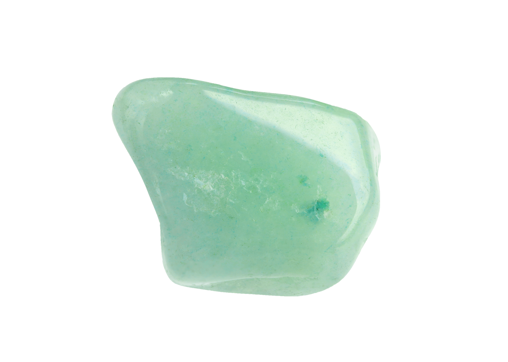
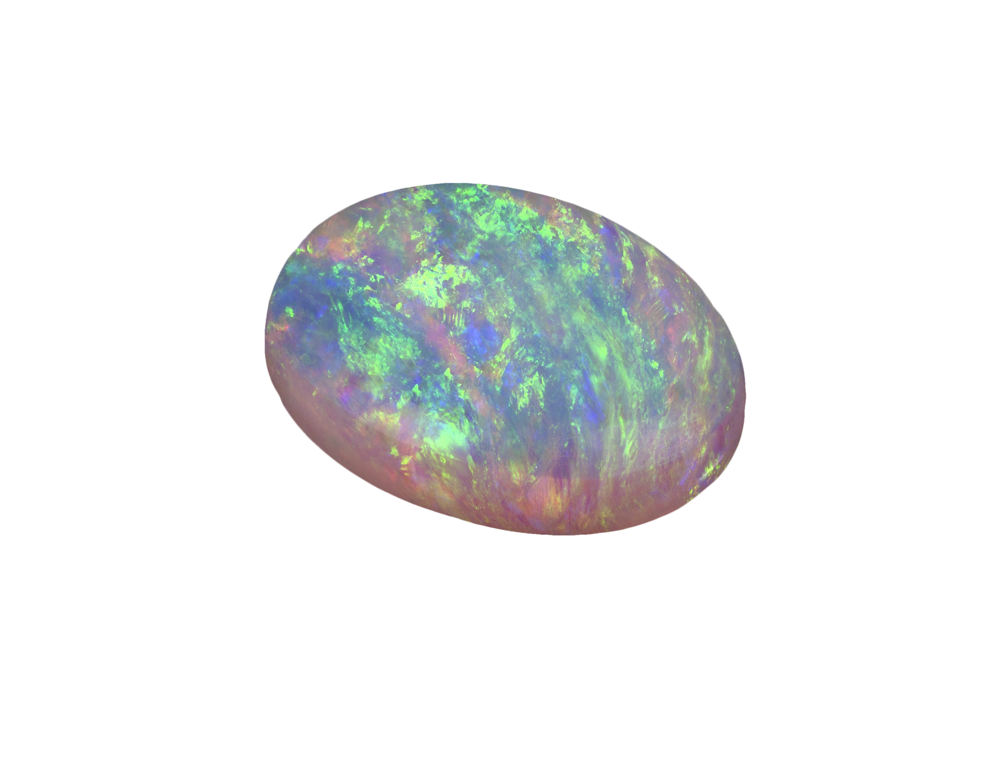
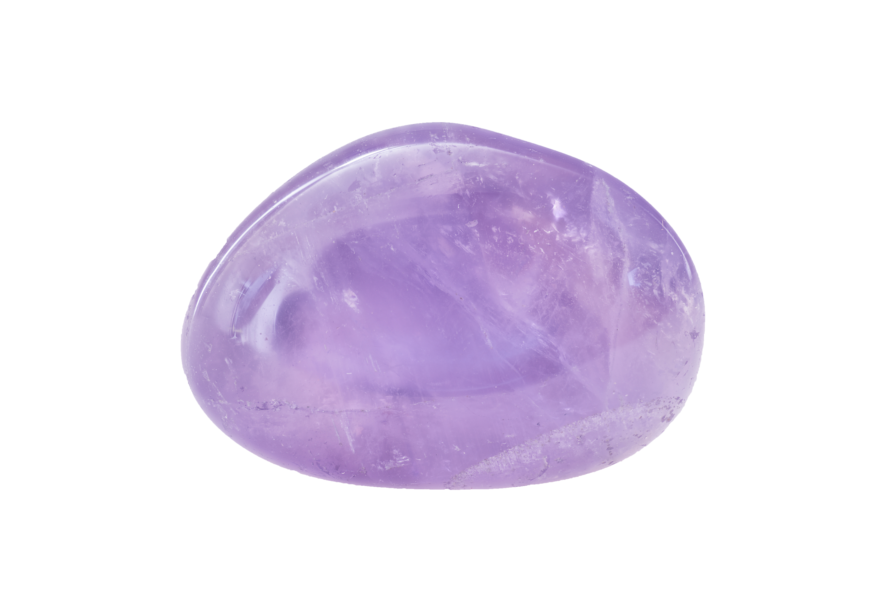
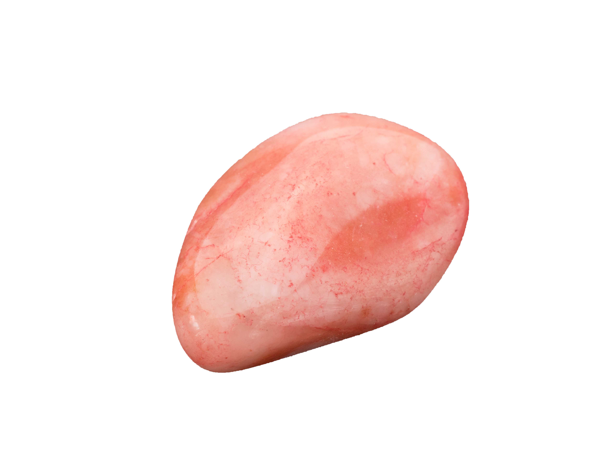
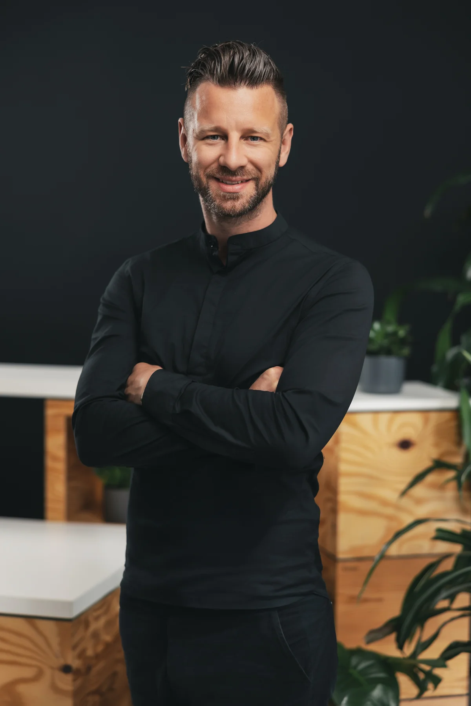
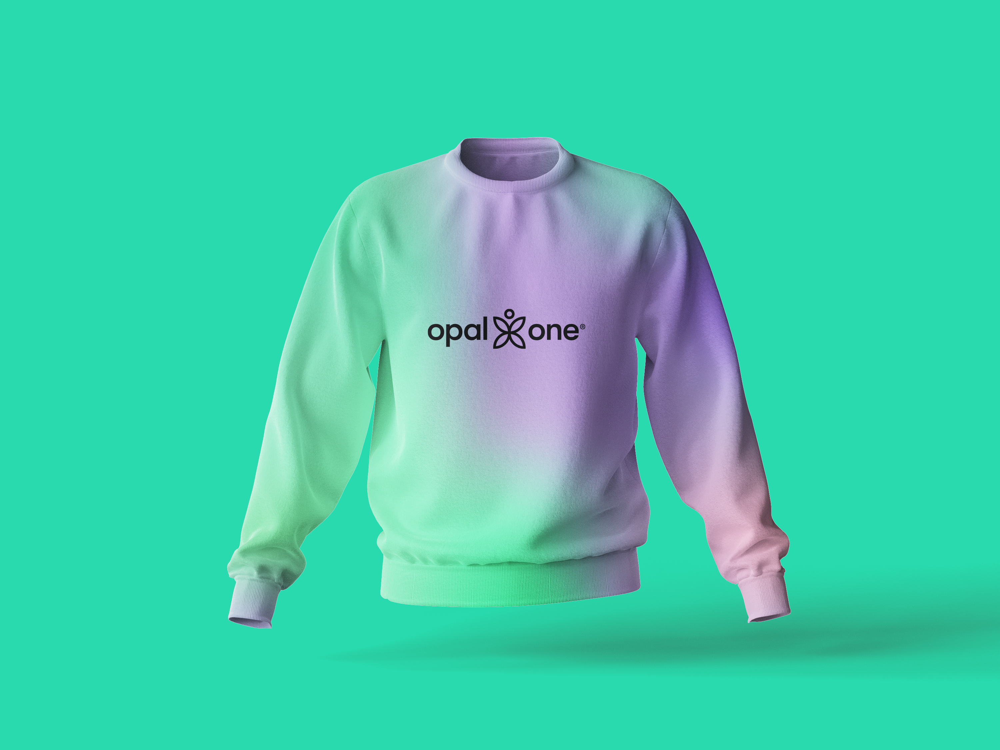
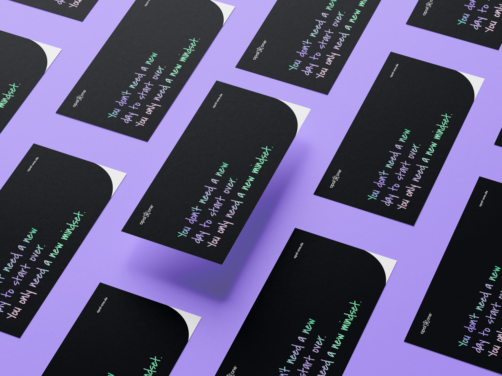

Über mich
Was steckt hinter
dem Opal?
Selten. Tiefgründig. Vielschichtig. Geformt durch Zeit, Energie und Wärme.
Der Opal als Spiegel
guter Kulturen
Der Opal ist einer der seltensten Edelsteine der Welt. Er entsteht nicht über Nacht – sein Entstehungsprozess dauert Millionen von Jahren und erfordert ein präzises Zusammenspiel von Zeit, Energie, Materie und Wärme. Kein Opal gleicht dem anderen. Jeder ist einzigartig in seiner Farbgebung, seinen Reflexionen, seiner Tiefe.
Genau das beschreibt auch gute Unternehmenskultur: Sie lässt sich nicht kopieren, nicht importieren. Sie entsteht langsam, durch ehrliche Auseinandersetzung, durch echte Begegnung – und sie leuchtet dann von innen heraus.

Zeit
Geduld als Prinzip
Nachhaltige Kultur braucht Zeit und Konsequenz. Schnelle Lösungen halten nicht.

Energie
Engagement zählt
Echtes Commitment aller Beteiligten erzeugt die Energie, die Transformation möglich macht.

Materie
Substanz statt Schein
Ich arbeite mit dem, was wirklich ist – nicht mit dem, was sich jemand wünscht.

Wärme
Menschlichkeit trägt
Empathie und Vertrauen sind die Wärme, die Veränderung wachsen lässt.

Florian Nützel — Gründer OPAL ONE
„Ich verbinde Menschen mit dem Ziel des gemeinsamen Wachstums."
Als Kulturcoach weiß ich: Veränderung beginnt beim Menschen. Bei Haltung, Kommunikation und dem Mut zur Ehrlichkeit. Dieser Überzeugung folgt jede meiner Begleitungen.
OPAL ONE ist nicht zuerst ein Unternehmen. Es ist ein Raum — den ich für mich selbst geschaffen habe, bevor ich ihn für andere geöffnet habe. Nach Jahren als CEO und Berater wollte ich einen Ort, an dem die Fragen einen Platz haben, die Systeme oft nicht vertragen. OPAL ist mein eigenes Zukunftsbild, in Arbeit gebrachte Form.
Ich begleite Menschen — nicht Organigramme. Im direkten, vertraulichen Gespräch entsteht das, was Strategien und Strukturen nicht ersetzen können: echte Klarheit über sich selbst.
Vom Ingenieur zum Kulturcoach
Mein Weg zum Kulturcoach begann nicht im Seminarraum, sondern auf Baustellen, in Fabriken und auf Reisen. Diese Stationen haben mein Verständnis davon geprägt, wie Menschen zusammenarbeiten — und warum sie es so oft nicht tun.
seit 05/2025
Gründer OPAL ONE
OPAL ONE | Kulturcoaching & Organisationstransformation
Kulturcoaching und Begleitung von Führungskräften, Teams und Organisationen. Ich verbinde Menschen mit dem Ziel des gemeinsamen Wachstums.
seit 05/2025
Marken- und Kulturberater
schmidundkreative
Ganzheitliche Verantwortung für Markenstrategie und Markenführung. Verankerung der Marke in Unternehmenskultur, Führung und Mitarbeitererlebnis.
01/2021 – 10/2023
Geschäftsführer / CEO
Opus Marketing GmbH
Strategische Ausrichtung und Führung nach Unternehmensnachfolge. Aufbau von Unternehmenskultur über gelebte Werte und Purpose. Personalverantwortung und Coaching von Mitarbeitern.
02/2017 – 12/2020
Projektleiter
Opus Marketing GmbH
Betreuung von Marken-, Arbeitgebermarken- und Digitalprojekten. Führung von Marken- und Kulturworkshops mit Unternehmen verschiedener Branchen.
11/2016 – 01/2017
Weltreise — Zeit für mich
84 Tage · 16 Länder · 4 Kontinente
Eine bewusste Auszeit, die meinen Blick auf Menschen und Kulturen grundlegend verändert hat. Der Entschluss, Kultur und Verbindung zum Mittelpunkt meiner Arbeit zu machen, entstand auf dieser Reise.
07/2013 – 06/2016
Head of Projektmanagement
Cybex GmbH (Childsafety)
Verantwortung für Kindersitze und Kinderwagen von der Idee bis zur Marktreife. Ca. 1,5 Jahre vor Ort in China — intensive Erfahrung mit interkultureller Zusammenarbeit.
11/2011 – 06/2013
Entwicklungsingenieur
Rehau AG & Co.
Projektleitung für automotive Entwicklungsprojekte. Ca. 1 Jahr vor Ort in den USA — erste internationale Führungs- und Kooperationserfahrung.
10/2007 – 09/2011
Bachelor of Engineering
Hochschule Ingolstadt (FH)
Wirtschaftsingenieurwesen, Schwerpunkt Produktmanagement. Das technisch-analytische Fundament, auf dem heute eine menschenzentrierte Arbeit aufbaut.
Verbinden · Verstehen · Verbessern
Mission
Ich schaffe einen Raum für offenen, ehrlichen Austausch. Einen Raum, in dem Führungskräfte, Teams und ganze Organisationen sich begegnen können, jenseits von Hierarchie und Angst. Mein Ziel: Menschen ganzheitlich verbinden, mit sich selbst, miteinander und mit dem gemeinsamen Zweck.
Vision
Eine Welt, in der das Gespräch zwischen Menschen nicht als Mittel zum Zweck gilt, sondern als das Wertvollste selbst. In der Klarheit über sich selbst als Stärke zählt — nicht als Luxus. OPAL ONE ist mein Beitrag dazu: radikal menschlich, direkt und ohne Umwege.
Drei Prinzipien.
Eine Haltung.
01
Ehrlichkeit
Das Fundament jeder Transformation
Ehrlichkeit ist eine Haltung, keine Technik. Echte Veränderung entsteht dort, wo die Dinge beim Namen genannt werden. Wo der Raum sicher genug ist, um unbequeme Wahrheiten auszusprechen.
Genau diesen Raum schaffe ich. Einen, in dem Offenheit Stärke bedeutet und Ehrlichkeit verbindet, statt zu verletzen. Wer wirklich gehört wird, kann sich wirklich verändern.
02
Empathie
Verstehen vor Verändern
Empathie heißt verstehen: die Perspektive des anderen, den Kontext einer Situation, die emotionale Landschaft einer Organisation. Dieses Verstehen ist die Voraussetzung für wirksames Handeln.
Ich begegne jedem Menschen mit aufrichtiger Neugier und erkunde, statt zu urteilen. Aus diesem Erkunden entsteht das Verständnis, das Transformation trägt.
03
Verbundenheit
Gemeinsam mehr als die Summe der Teile
Der Name OPAL ONE steht für mein wichtigstes Prinzip: Verbindung. Menschen mit sich selbst verbinden, miteinander, mit dem gemeinsamen Zweck. Wo echte Verbundenheit entsteht, entsteht Kraft.
Verbundenheit ist die Voraussetzung für Vertrauen, für Innovation, für gemeinsames Wachstum. Sie unterscheidet eine Organisation von einer Ansammlung Einzelner.
Für wen ist OPAL ONE?
Ich begleite Menschen, die bereit sind, wirklich hinzuschauen. Kein Unternehmensauftrag nötig — nur die Bereitschaft, ehrlich zu sein.
Menschen in Veränderung
Wer spürt, dass etwas nicht mehr stimmt — in der Arbeit, in der Rolle, in der Richtung. Die wissen, dass die Antwort nicht aus einem Algorithmus kommt, sondern aus einem echten Gespräch.
Unternehmer, Inhaber & Gründer
Einzelpersonen, die ein persönliches Zukunftsbild entwickeln wollen — jenseits ihrer Unternehmensrolle. Wer wollen sie sein, wenn die Rolle wegfällt?
Führungspersönlichkeiten
Die wissen wollen, wie sie wirklich wirken. Die ihren Führungsstil nicht optimieren, sondern verstehen möchten. Für die Haltung wichtiger ist als Methodik.
Häufige Fragen zu OPAL ONE
Wer steckt hinter OPAL ONE?
Hinter OPAL ONE steht Florian Nützel, Kulturcoach und Transformationsbegleiter. Er begleitet Führungskräfte, Teams und Organisationen bei der Entwicklung ihrer Unternehmenskultur.
Warum der Name OPAL ONE?
Der Opal ist ein seltener Edelstein, der über Millionen Jahre aus Zeit, Energie, Materie und Wärme entsteht und in dem kein Stein dem anderen gleicht. Er steht als Sinnbild für gute Unternehmenskultur: einzigartig, gewachsen, von innen leuchtend. "One" steht für Verbindung, das zentrale Prinzip der Arbeit.
Was unterscheidet OPAL ONE von klassischer Unternehmensberatung?
Klassische Beratung setzt meist bei Strukturen und Prozessen an. OPAL ONE setzt beim Menschen an: bei Haltung, Kommunikation und Vertrauen. Der Ansatz ist ganzheitlich und betrachtet Mensch, Unternehmen, Produkt und Kontext zusammen.
OPAL ONE im Alltag
Ein konsistentes Erscheinungsbild, das Haltung zeigt. Von der Visitenkarte bis zum Pullover.

